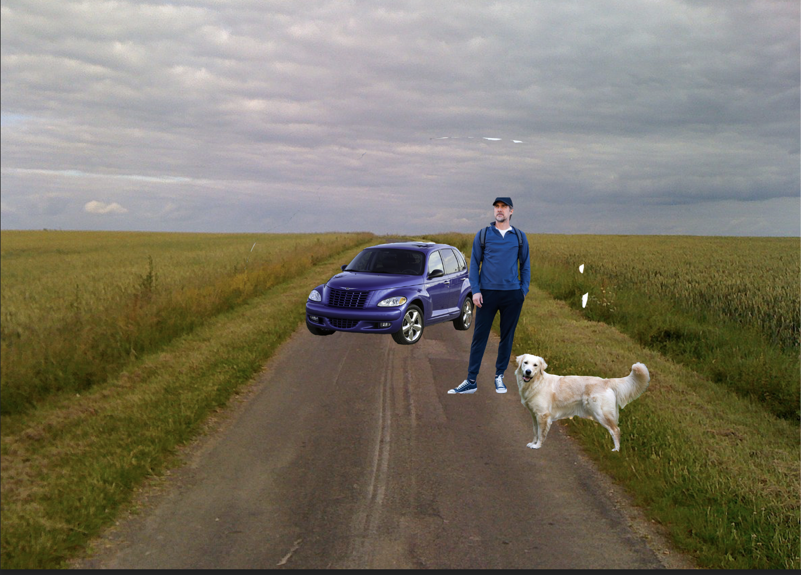

SUPER DOG

Your in the middle of no where what do you do?
You drive off in fashion with the air hitting your face

You and the dog ride back home in the nice fresh weather

The dog has been mutated and trainging for years and has finally found you. IT HAS KILLED YOU.

The dog has been with you since you picked it up. It now lays peacefully years later with you in your death bed.